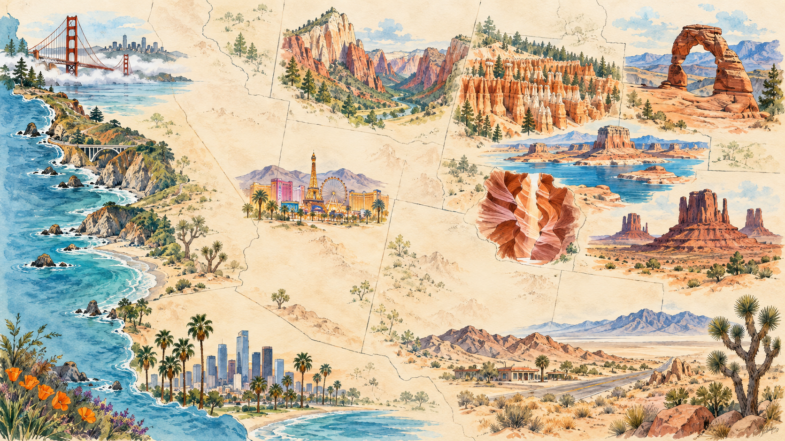
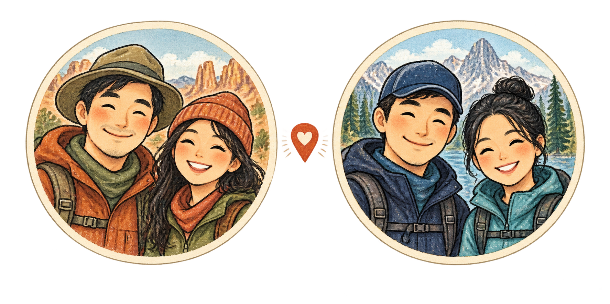

Santana · 2 人
01:10
9月25日 · HKG T1
香港出发
CX872
前一日
22:40
9月24日 · SFO 国际航站楼
旧金山抵达 · 12h30m
00:25
10月6日 · LAX Terminal B（B航站楼）
洛杉矶出发
CX881
次日
06:45
10月7日 · HKG T1
香港抵达 · 15h20m
West Coast Road Trip · 2026
从旧金山沿加州海岸南下，再经内华达、犹他和亚利桑那返回洛杉矶。


时间均按出发地或抵达地当地时间显示。
展开当天即可查看活动、景点简介、住宿、用餐推荐、加油提醒和 Google 地图路线。
把会影响能否按计划走完的事项集中放在这里；路况和开放状态请在当天再次确认。
Regent’s Slide 长期封闭路段已于 2026年1月14日恢复通车；Caltrans 最新 SR-1 路况页也不再显示 Pacific Valley 至 Monterey / San Luis Obispo 县界全封闭。目前 Rocky Creek Bridge（洛基溪大桥）附近为单向交替通行，需预留排队时间。出发当天请查看 Caltrans SR-1 实时路况、Caltrans QuickMap；恢复通车依据见 Caltrans 官方公告。
主峡谷接驳车 7:00 发车，私家车不能驶入 Zion Canyon Scenic Drive。Angels Landing 全员须带许可邮件离线副本和照片证件，按 9:00–12:00 时段从 The Grotto（6号站）出发；详情看 NPS 官方说明。
在 Springdale（斯普林代尔）租防水裤、溯溪鞋和木杖，手机装防水袋；当日先查山洪预报，遇雷雨或警报不要下谷。
Delicate Arch 往返约 4.8 km / 2–3 小时，再赶 Canyonlands 日落容易过满。若当天进园排队或停车延误，优先保留一个日落项目；夜间返 Moab 注意野生动物。
14:00 开始 check-in，15:15 游览；只带手机/手持相机和一瓶水，通常不能带包、三脚架或自拍杆。当天从 Monument Valley 前往 Page 会跨时区，最终以旅行社确认的 Page 时间为准。
尽量选最早的皮划艇时段，两名司机每约 2 小时轮换；Kingman 停留控制在 1 小时内，并提前向 Barstow 酒店报备晚到。若疲劳，直接缩短或取消 Kingman 停留。
The Broad 周一闭馆，因此保留在 10月4日周日参观；免费常设展建议提前预约。不要把入馆计划挪到 10月5日。
租车经过收费方向时按车牌记账。取车时先确认 Hertz 的收费方案，避免重复缴费或产生额外服务费。
Midsize SUV AWD（中型四驱 SUV）· Jeep Compass 或同级
取车时确认实际车型、燃油标号、油箱容量和“满油取还”要求。
按一箱约 300 miles（约 480 km）的可用里程规划，实际以取到的车辆为准。
按这次会经过的 California、Nevada、Utah 和 Arizona 整理。
带驾照原件、护照及租车公司要求的英文翻译件或 IDP；所有实际驾驶人都要写进租车合同。IDP 只能作翻译，不能代替驾照原件。
车辆靠道路右侧行驶、驾驶座在左边。限速牌是 miles per hour；导航显示 60 mph 约等于 97 km/h，不要把数字当公里。
车轮停稳在停止线/人行横道前再走。四向 STOP 通常先到先走；同时到达时让右侧车辆先行。不要像国内某些路口一样缓慢滑过去。
先完全停车，确认没有 “NO TURN ON RED” 标志，再让行行人、自行车和直行车后右转；红色箭头亮起时不能转。
加州许多路口即使没有画线也属于人行横道。转弯、出停车场或穿过自行车道时务必回头看盲区，宁可多等一轮。
匝道上先加速到接近车流再并线；左道主要用于超车。HOV / Carpool 和 FasTrak 车道按标志进入，不确定就走普通车道。
始终挂 P 挡并拉手刹：下坡车轮向路缘；上坡有路缘车轮向外；没有路缘时车轮向道路外侧。红色路缘禁止停车。
全程按最严格标准：手机固定在支架上，只用免提；驾驶人不饮酒。长途两人轮换，约每 2 小时休息一次。
半箱油就开始补，提前下载离线地图，夜间留意鹿和横风。Monument Valley 17-mile loop 是土路，先确认租车合同是否允许驶入未铺装道路。
先看油箱盖或租车单确认油号。境外信用卡若在油泵输入 ZIP code 失败，可进店预付；加完再回店结算差额。
遇黄色校车闪红灯并伸出 STOP 牌时，通常两个方向的车辆都必须停住，直到红灯熄灭、STOP 牌收回；只有中间有实体隔离带时，对向车辆才可能不受影响。
听到警车、消防车或救护车鸣笛并闪灯时，减速并安全靠右停车让其先过；不要停在路口内，也不要跟在紧急车辆后面抢行。
打灯后在右侧安全位置停车，挂 P 挡并留在车内；双手放方向盘可见处，夜间开车内灯，等警员指示后再拿证件。
紧急情况拨 911；先确保人身安全，再联系租车公司。取车和还车都绕车录像，拍清车身、轮胎、油表与里程，并保留最后加油小票。